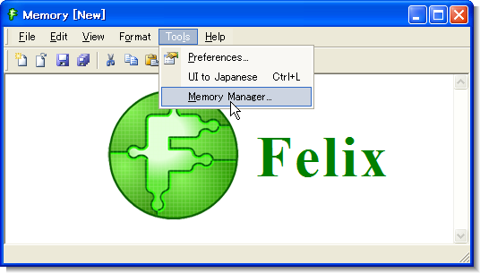

Felix Manual
3.2.12 Manage Your Memories
You can have any number of memories open at one time — the only limit is the physical memory and disk space available on your computer. Use the Memory Manager dialog to manage your various memories.
To call up the Memory Manager dialog, from the Tools menu, select Memory Manager…

The Memory Manager dialog appears:

| Memory List | The list of currently loaded memories. Memories whose checkboxes are selected are "active"; only active memories are included in searches and the like. |
|---|---|
| Move Up | Move the selected memory up in the list. The top memory in the list is the "active" memory; new entries are added to this memory. |
| Move Down | Move the selected memory down in the list. The top memory in the list is the "active" memory; new entries are added to this memory. |
| Add... | Add (load) a memory into Felix. |
| Remove | Remove (unload) a memory from Felix. This does not delete the memory from your hard disk. |
| Memory Info View |
Displays various information about the currently selected memory.
File Name:
The file name of the currently selected memory. Creator: The name of the user who created the memory. Field: The field (subject) of the memory. Created: The date that the memory was created. Source Language: The source language of the memory. Target Language: The target language of the memory. Client: The client for whom the memory is used. Num. Entries: The number of entries in the memory. File Size: The size of the memory file on disk. Reliability: The minimum, maximum, and average reliability of the memory's entries. Validated %: The percentage of the records that have been validated. Locked: Whether the memory is locked. See below for details. |
| Edit Info | Edit the memory information. When you click the button, the Information area becomes editable, and the button text changes to End Edit; you can change the values of the bold items. When you are done with your edits, click End Edit. |
| OK | Accept your settings and close the dialog. |
| Cancel | Discard your settings and quit the dialog. |
You can also batch-set the reliability and validated flag, or lock/unlock a memory by clicking on Advanced…

| Batch Set Reliability | Set the reliability of all entries in the memory. |
| Batch Validate | Validate/unvalidate every entry in the memory. |
| Locked |
Lock/unlock the memory. Only the creator of a memory can lock or unlock that memory. A locked memory can be searched, but it is not possible to add, edit, or delete the entries of a locked memory. If you wish to unlock a memory that you did not create, you must use the Save As... feature to save it as a different file. That will make you the creator of the new file, and allow you to unlock the memory. This feature is useful if you have a reference memory (e.g. from a client) that you do not wish to/may not edit, or if you want to have a common translation memory to be referred to by multiple translators, but you do not want individual translators changing that memory. |